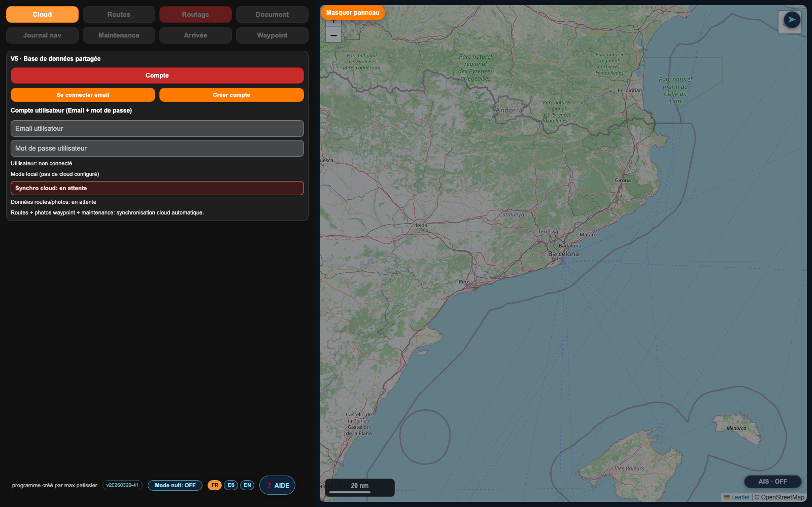
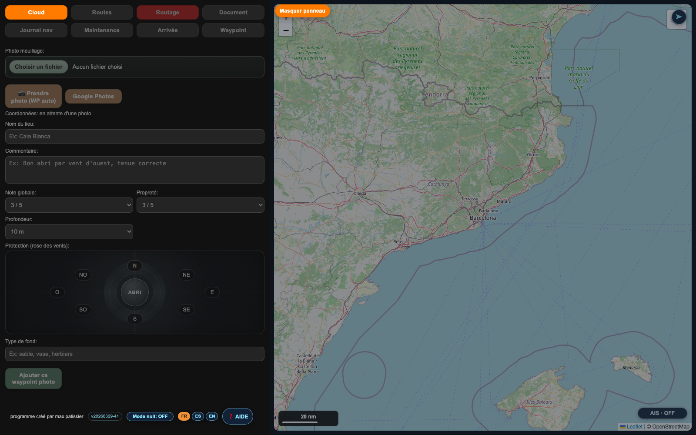

CEIBO
CEIBO est une plateforme nautique intégrée qui réunit, dans une seule interface, la préparation de route, le routage météo, le journal de navigation, la maintenance technique, la gestion documentaire et la synchronisation cloud.
Résumé exécutif
CEIBO répond à un besoin rarement traité de façon cohérente dans le nautisme : disposer d'un outil unique pour préparer une traversée, exécuter la navigation avec les bonnes données, conserver une trace exploitable après coup, puis gérer la maintenance et la documentation du bateau sans changer d'environnement.
Le programme combine ainsi une logique de routeur, de logbook professionnel, de poste de maintenance et de base documentaire assistée par IA. Le résultat est une réduction de la dispersion des outils, une meilleure traçabilité opérationnelle et une continuité entre la décision à terre et l'usage réel à bord.
Valeur apportée
Mieux planifier
- Création, édition, import et export de routes en JSON et GPX.
- Routage fondé sur des polaires et une lecture météo par fenêtre temporelle.
- Suggestion d'heures de départ et variantes de route.
Mieux naviguer
- Journal de navigation avec données GPS, météo et contexte opérationnel.
- Connexion possible à SignalK pour exploiter l'instrumentation du bord.
- Gestion d'une alarme de mouillage et suivi de la navigation en temps réel.
Mieux exploiter le bateau
- Suivi visuel de la maintenance, des fournisseurs et des factures.
- Bibliothèque documentaire avec recherche assistée par IA locale.
- Synchronisation cloud pour la continuité entre appareils.
Fonctions clés
Cette section synthétise les briques qui structurent réellement CEIBO dans son usage quotidien. La présentation a été renforcée pour distinguer clairement les fonctions cœur, les données exploitées et la finalité opérationnelle de chaque module.
Navigation et routage
- Gestion complète des routes avec création, sauvegarde, recherche, inversion, import et export JSON ou GPX.
- Calcul de trajectoires à partir des polaires du bateau, des paramètres de voilure et des réglages de contournement côtier.
- Exploitation des couches météo et suggestion de départ pour arbitrer entre sécurité, performance et faisabilité.
Journal de navigation
- Enregistrement GPS de session, exploitation des traces et contextualisation par données météo et navigation.
- Fonctionnement autonome sur iPad ou alimentation temps réel depuis un serveur SignalK embarqué.
- Socle de reporting pour relecture post-navigation, export documentaire et constitution d'un historique exploitable.
Maintenance technique
- Schémas techniques annotables avec pastilles visuelles, états de traitement, priorité et datation des interventions.
- Gestion intégrée des dépenses, factures, fournisseurs et pièces documentaires liées à l'entretien.
- Volet moteur et monitoring SignalK pour rapprocher incidents, maintenance et données de fonctionnement réelles.
Documentation intelligente
- Classement de fichiers techniques par catégories, sous-catégories, tags et descriptions structurées.
- Moteur RAG local pour interroger les manuels, notices et procédures sans recherche manuelle fastidieuse.
- Historique de requêtes, réglage du style de réponse et base de connaissance immédiatement réutilisable à bord.
Innovations et différenciation
1. Plateforme vraiment transversale
Le programme combine dans un même poste de travail des briques habituellement dispersées : cartographie, routage, météo, journal nav, maintenance, documents et cloud.
2. Pont entre données réelles et décision
L'intégration SignalK et les journaux de bord permettent de relier les données issues du bateau aux fonctions de suivi, d'analyse et de reporting.
3. Documentation technique exploitable
Le module documentaire assisté par IA réduit le temps passé à rechercher une information dans des manuels ou des dossiers techniques hétérogènes.
4. Conception orientée usage à bord
L'interface par onglets, l'accès direct aux opérations critiques et la synchronisation cloud en font un outil exploitable en situation opérationnelle, pas seulement en préparation à terre.
Public visé
Armateurs
Pour centraliser l'état du bateau, la documentation, les coûts et l'historique technique.
Skippers et professionnels
Pour disposer d'une base de traçabilité robuste, exploitable en navigation et en restitution.
Équipages multi-supports
Pour partager les données entre Mac, iPad et autres postes grâce à la couche cloud.
Captures d'écran des fonctions principales
Captures réalisées depuis l'interface locale du programme.




En synthèse
CEIBO se positionne comme un centre de pilotage numérique pour la navigation moderne. Sa proposition de valeur tient dans l'intégration de fonctions normalement cloisonnées et dans sa capacité à connecter préparation de route, données temps réel, historique de navigation, maintenance et connaissance technique.
Pour une présentation commerciale, une démonstration produit ou un dossier de projet, CEIBO peut être décrit comme une solution nautique tout-en-un, orientée terrain, à forte valeur opérationnelle.